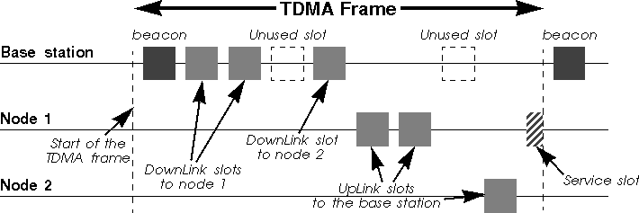
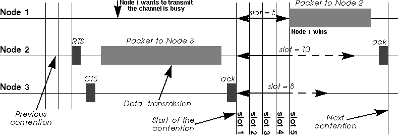
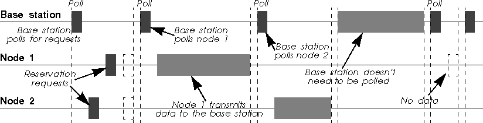
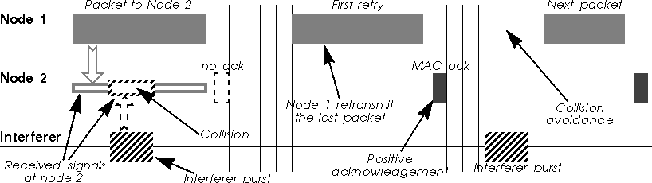
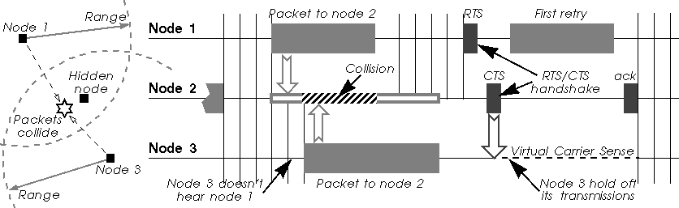
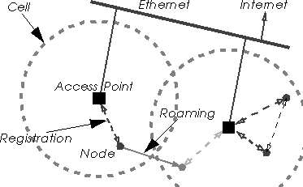
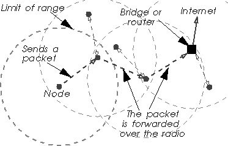

5 The MAC level (link layer)
This section of the document focus on the next layer up, the link
layer. This mostly comprise the MAC (Medium Access Control)
protocol. Different MAC protocols and techniques are presented.
5.1 Main channel access mechanisms
The main job of the MAC protocol is to regulate the usage of the
medium, and this is done through a channel access mechanism. A
channel access mechanism is a way to divide the main resource
between nodes, the radio channel, by regulating the use of it. It
tells each node when it can transmit and when it is expected to
receive data. The channel access mechanism is the core of the MAC
protocol. In this section, we describe TDMA, CSMA and
polling which are the 3 main classes of channel access
mechanisms for radio.
5.1.1 TDMA
In this chapter, we discuss TDMA as a channel access mechanism and not
its applications and protocols based on it.
TDMA (Time Division Multiplex Access) is very simple. A
specific node, the base station, has the responsibility to
coordinate the nodes of the network. The time on the channel is
divided into time slots, which are generally of fixed
size. Each node of the network is allocated a certain number of slots
where it can transmit. Slots are usually organised in a frame, which
is repeated on a regular basis.
The base station specify in the beacon (a management frame) the
organisation of the frame. Each node just needs to follow blindly the
instruction of the base station. Very often, the frame is organised as
downlink (base station to node) and uplink (node to base station)
slots, and all the communications goes through the base station. A
service slot allows a node to request the allocation of a connection,
by sending a connection request message in it (see chapter 5.2.4). In
some standards, uplink and downlink frames are one different
frequencies, and the service slots might also be a separate channel.
TDMA channel access mechanism :

TDMA suits very well phone applications, because those application
have very predictable needs (fixed and identical bit rate). Each
handset is allocated a downlink and a uplink slot of a fixed size (the
size of the voice data for the duration of the frame). This is no
surprise why TDMA is used into all cellular phone standards (GSM in
Europe, TDMA and PCS in the USA) and cordless phone standards (DECT in
Europe). TDMA is also very good to achieve low latency and guarantee
of bandwidth (where CSMA/CA is quite bad).
TDMA is not well suited for data networking applications, because it
is very strict and inflexible. IP is connectionless and generates
bursty traffic which is very unpredictable by nature, while TDMA is
connection oriented (so it has to suffer the overhead of creating
connections for single IP packets). TDMA use fixed size packets and
usually symmetrical link, which doesn't suit IP that well (variable
size packets).
TDMA is very much dependant of the quality of the frequency band. In a
dedicated clean band, as it is the case for cellular phone standard,
TDMA is fine. But, because of it's inflexibility, and because it
doesn't really take care of what's happening on the channel, TDMA
can't cope and adapt to the bursty interference sources found in the
unlicensed bands (unless a retry mechanism is put on top of it).
5.1.2 CSMA/CA
CSMA/CA (Carrier Sense Multiple Access/Collision Avoidance) is
the channel access mechanism used by most wireless LANs in the
ISM bands. A channel access mechanism is the part of the
protocol which specifies how the node uses the medium :
when to listen, when to transmit...
The basic principles of CSMA/CA are listen before talk and
contention. This is an asynchronous message passing
mechanism (connectionless), delivering a best effort service, but no
bandwidth and latency guarantee (you are still following ?). It's main
advantages are that it is suited for network protocols such as TCP/IP,
adapts quite well with the variable condition of traffic and is quite
robust against interferences.
CSMA/CA is fundamentally different from the channel access mechanism
used by cellular phone systems (see TDMA in chapter 5.1.1).
CSMA/CA is derived from CSMA/CD (Collision Detection), which is the
base of Ethernet. The main difference is the collision
avoidance : on a wire, the transceiver has the ability to
listen while transmitting and so to detect collisions (with a wire all
transmissions have approximately the same strength). But, even if a
radio node could listen on the channel while transmitting, the
strength of its own transmissions would mask all other signals on the
air. So, the protocol can't directly detect collisions like with
Ethernet and only tries to avoid them.
CSMA/CA channel Access Mechanisms :

The protocol starts by listening on the channel (this is called
carrier sense), and if it is found to be idle, it sends the
first packet in the transmit queue. If it is busy (either another node
transmission or interference), the node waits the end of the current
transmission and then starts the contention (wait a random
amount of time). When its contention timer expires, if the channel is
still idle, the node sends the packet. The node having chosen the
shortest contention delay wins and transmits its packet. The other
nodes just wait for the next contention (at the end of this
packet). Because the contention is a random number and done for every
packets, each node is given an equal chance to access the channel (on
average - it is statistic).
As we have mentioned, we can't detect collisions on the radio, and
because the radio needs time to switch from receive to transmit, this
contention is usually slotted (a transmission may start only at
the beginning of a slot : 50 µs in 802.11 FH and 20
µs in 802.11 DS). This makes the average contention delay
larger, but reduces significantly the collisions (we can't totally
avoid them).
5.1.3 Polling MAC
Polling is the third major channel access mechanism, after
TDMA and CSMA/CA (see chapter 5.1.1 and
chapter 5.1.2
respectively - There exist also Token Ring, but I guess that nobody
would be crazy enough to implement it on a radio link). The most
successful networking standard using polling is 100vg (IEEE 802.12),
but some wireless standard are also using it. For example,
802.11 offers a polling channel access mechanism (Point
Coordination Function) in addition to the CSMA/CA one.
Polling is in fact in between TDMA and CSMA/CA. The base station
retains total control over the channel, but the frame content is no
more fixed, allowing variable size packets to be sent. The base
station sends a specific packet (a poll packet) to trigger the
transmission by the node. The node just wait to receive a poll packet,
and upon reception sends what it has to transmit.
Polling can be implemented as a connection oriented service (very much
like TDMA, but with higher flexibility in packet size) or connection
less-service (asynchronous packet based). The base station can either
poll permanently all the nodes of the network just to check if they
have something to send (that is workable only with a very limited
number of nodes), or the protocol use reservation slots (see chapter 5.2.4)
where each node can request a connection or to transmit a packet
(depending is the MAC protocol is connection oriented or not).
Polling channel Access Mechanisms :

In the case of 100vg, the polling mechanism doesn't use any bandwidth
(it's done out of band through tones), leading to a very efficient use
of the channel (over 96 % user throughput). For 802.11 and wireless
LAN, all the polling packets have to be transmitted over the air,
generating much more overhead. More recent system use reservation
slots, which is more flexible but still require significant overhead.
As CSMA/CA offers ad-hoc networking (no need of a base station) and
similar performance, it is usually preferred in most wireless
LANs. For example, most 802.11 vendors prefer to use the distributed
mode (CSMA/CA) over the coordinated mode (polling).
5.1.4 Reservation protocols and WATM
The most interesting feature of protocols based on TDMA or Polling
mechanism is that the Base Station has absolute control of the traffic
and can guarantee bandwidth and latency for applications that require
it. Sceptics might wonder what can be guaranteed anyway in an
environment open to interferers and without deployment control (see chapter 4.1), but
that's another topic of discussions.
The guarantee of bandwidth is essential for people deploying Wireless
Distributions Systems (also called Last Mile Delivery Systems), like
replacing the cable between your house and your ISP with
wireless. Those people want to be able to restrict and segregate users
and guarantee fairness. Standards such as HiperLan II (Broadband Radio
Access Network project - see chapter 6.4)
is aiming at those usages.
The basic idea is to put ATM (Asynchronous Transfer Mode) over radio,
as ATM implement all the Quality Of Service features that they are
dreaming off. The network is centrally managed (so uses TDMA or
Polling mechanism with reservation slots), the base station implement
a call admission control (accept or reject new ATM circuits) and
scheduler (prioritise and send ATM cells) to guarantee the quality of
service requested. On top of the MAC, all the usual ATM layers are
needed (virtual circuits, segmentation/reassembly, IP adaptation...),
as well as some specific mobile features (to manage roaming).
Unfortunately, radio transmission has a lot of overhead (like large
synchronisation field and headers) which is somewhat incompatible with
the small ATM cells. The main benefit of ATM small cells is to allow
very efficient switching, but this is not needed over radio. At the
end of the day, WATM doesn't resemble at all to ATM ; ATM uses
individual channel for each node and is asynchronous, whereas WATM
uses a shared medium and is totally synchronous.
5.2 MAC techniques
We have described the main principle of CSMA/CA (see chapter 5.1.2),
but most MAC protocols use additional techniques to improve the
performance of CSMA/CA.
5.2.1 MAC retransmissions
As we have seen in the previous chapter, the main problem of the
CSMA/CA protocol is that the transmitter can't detect
collisions on the medium. There is also a higher error rate on the air
than on a wire (see chapter 4.8), so a higher chance of packets being
corrupted. TCP doesn't like very much packet losses at the MAC
layer (see TCP and packet losses problem - chapter 5.4.5). Because
of that, most MAC protocols also implement positive
acknowledgement and MAC level retransmissions to avoid
losing packets on the air.
The principle is quite simple : each time a node receives a
packet, it sends back immediately a short message (an ack) to the
transmitter to indicate that it has successfully received the packet
without errors. If after sending a packet the transmitter doesn't
receive an ack, it knows that the packet was lost, so it will
retransmit the packet (after contending again for the medium, like in
Ethernet).
Most MAC protocols use a stop and go mechanism, they transmit the next
packet of the queue only if the current packet has been properly
acknowledged (no sliding window mechanism like in TCP). The rationale
is that it makes the protocol simpler, minimise latency and avoid
desenquencing packets (something that TCP doesn't like as well).
MAC retransmissions in CSMA/CA :

The acks are "embedded" in the MAC protocol, so they are
guaranteed not to collide (the contention starts after the ack - see
figure). These acks are very different from the TCP acks, which work
at a different level (and on a different time frame). Of course,
broadcast and multicast packets are not acknowledged, so they are more
likely to fail...
If all modern Wireless LAN protocols implement this essential feature,
some old products may lack it. Wireless WAN protocols (like satellite
links) don't implement that either, because the round trip delay in
their case is so long that by the time they would receive the ack they
could have sent another packet. If your Wireless LAN doesn't implement
MAC level retransmissions, all is not lost : students of Berkeley
have created a protocol called snoop (see at ftp://daedalus.cs.berkeley.edu/pub/snoop/) which filters the TCP
acks and retransmits the lost packets before TCP even notices that
they are lost (this is still a link level retransmission, but done
just over the MAC).
5.2.2 Fragmentation
The radio medium has a higher error rate than a wire. We have
explained in the previous chapter that it was why most products
were including MAC level retransmissions to avoid losing packets.
MAC level retransmissions solve this problem, but is not really
performant. If the packet to transmit is long and contains only one
error, the node needs to retransmit it entirely. If the error rate is
significantly high, we could come to some situation were the
probability of error in large packet is dangerously close to 1 (we
can't fit a packet between the bursts of errors due to fading or
interferers), so we can't get packet through.
This is why some products use fragmentation. Fragmentation is
sending the big packets in small pieces over the medium. Of course,
this adds some overhead, because it duplicates packet headers in every
fragments. Each fragment is individually checked and retransmitted if
necessary. The first advantage is that in case of error, the node
needs only to retransmit one small fragment, so it is faster. The
second advantage is that if the medium is very noisy, a small packet
has a higher probability to get through without errors, so the node
increases its chance of success in bad conditions.
5.2.3 RTS/CTS
In the chapter about range (chapter 4.6),
we have seen that the main effect of transmission on radio waves is
the attenuation of the signal. Because of this attenuation, we have
very commonly a problem of hidden nodes.
The hidden node problem comes from the fact that all nodes may not
hear each other because the attenuation is too strong between
them. Because transmissions are based on the carrier sense mechanism,
those nodes ignore each other and may transmit at the same
time. Usually, this is a good thing because it allows frequency
reuse (they are effectively in different cells).
But, for a node placed in between, these simultaneous transmissions
have a comparable strength and so collide (in its receiver). This node
could be impossible to reach because of these collisions.
The fundamental problem with carrier sense only is that the
transmitter tries to estimate if the channel is free at the receiver
with only local information. The situation might be quite different
between those two locations.
An simple and elegant solution to this problem (proposed by Phil Karn in his MACA
protocol for AX.25) is to use RTS/CTS (Request To Send/Clear To
Send). RTS/CTS is a handshaking : before sending a packet,
the transmitter sends a RTS and wait for a CTS from the receiver (see
figure below). The reception of a CTS indicates that the receiver is
able to receive the RTS, so the packet (the channel is clear in its
area).
At the same time, every node in the range of the receiver hears the
CTS (even if it doesn't hear the RTS), so understands that a
transmission is going on. The nodes hearing the CTS are the nodes that
could potentially create collisions in the receiver (assuming a
symmetric channel). Because these nodes may not hear the data
transmission, the RTS and CTS messages contain the size of the
expected transmission (to know how long the transmission will
last). This is the collision avoidance feature of the RTS/CTS
mechanism (also called virtual carrier sense) : all nodes
avoid accessing the channel after hearing the CTS even if their
carrier sense indicate that the medium is free.
RTS/CTS and hidden nodes in CSMA/CA :

RTS/CTS has another advantage : it lowers the overhead of a
collision on the medium (collisions are much shorter in time). If two
nodes attempt to transmit in the same slot of the contention window,
their RTS collide and they don't receive any CTS, so they loose only a
RTS, whereas in the normal scenario they would have lost a whole
packet.
Because the RTS/CTS handshaking adds a significant overhead, usually
it is not used for small packets or lightly loaded networks.
5.2.4 Reservation and service slots
One of the main problem of TDMA and Polling protocol is for the base
station to know when the nodes want to transmit. In CSMA/CA, each node
simply waits to win a contention, so this problem doesn't
exist. However, TDMA and Polling usually require a service slot
or reservation slot mechanism.
The idea is to offer a period of time where nodes can contend
(compete) and send to the base station some information about their
traffic requirements (a reservation request packet), this period of
time coming at regular interval (the remaining of the time, nodes just
obey the base station normally). The base station feeds the
reservation requests to its scheduling algorithm and decides
the main frame structure (when each node will transmit). This period
of time for sending reservation requests is either called service slot
(if it is use for more purpose like cell location and roaming) or
reservation slot (if it is use only to request a transmission or
connection).
If the MAC is connection oriented, the rate of new connection is low,
so usually a single service slot is enough (see figure in chapter 5.1.1). If
the MAC is packet oriented, the rate of requests is higher, so usually
the protocol offer many reservation slots together (see chapter 5.1.3). Nodes use a simple
Aloha protocol in the slots : they transmit, and if it
fail (collision with other requests or medium errors) they backoff a
random number of slots before retrying.
Protocols which use many different channels, such as cellular phone,
can even have a dedicated service channel separate from other
transmissions, instead of multiplexing service requests with the data
traffic.
5.3 Network topology
The topology of Wireless LAN is very different from traditional
LANs. The connectivity is limited by the range, so we usually don't
have complete coverage (some node may not see each other). This breaks
some assumptions of higher layers. To overcome this, either the
network is divided in cells managed by an Access Point, or the
network use MAC level forwarding.
5.3.1 Ad-hoc network
Ad-hoc network is the simplest form of Wireless LAN is a network
composed of a few nodes without any bridging or forwarding
capability. All nodes are equal and may join or leave at any time, and
have equal right to the medium. In fact, it's very much like an
Ethernet, where you may add or remove node at discretion. This is the
kind of radio networks deployed in homes of small offices.
Of course, for this to work all nodes must be able to see all the
other nodes of the network, to be able to establish communication with
them. When a nodes goes out of range, he just loose connection with
the rest of the ad-hoc network. Effectively, this is a single cell
network.
One of the node of the ad-hoc network may provide routing or proxying
to communicate to the rest of the work, but nodes are still confined
to the area within that cell.
5.3.2 Access Points and Roaming
Wireless networks are sometime isolated networks (called ad-hoc), but
most of the time they need to be connected to the rest of the world
(and the Internet :-). This is usually done through Access
Points.
In fact, an Access Point is simply a bridge, connected on one
side to the radio network and on the other side to Ethernet
(usually), forwarding packets between the two networks. A bridge works
at the MAC level, just looking through the MAC headers to make its
decisions (filtering) and changing MAC headers according to the MAC
protocol used. This means that NetBeui and IPX work
across the access point, and that the nodes connected to the radio
must use the same TCP/IP subnet as the Ethernet segment the
access point is connected to.
Because of the interactions with MAC level acknowledgement, most of
the time bridging on Wireless LAN is not as simple and transparent as
on Ethernet, and a specific scheme is designed in the MAC
protocol. When a node sends a packet, the source address must be his
to properly receive the MAC level ack coming back (and vice versa). In
theory, if the MAC and the driver are carefully implemented it could
be possible to support transparently Ethernet bridges (like in a Linux
box), but most manufacturers don't bother (especially that they want
you to buy an Access Point).
Using Access Points allows to divide the network in cells. Each
Access Point is at the centre of a cell and is given a different
channel (frequency, hopping pattern... - the goal is for each cell to
interferer the least with the others). By careful deployment of those
Access Point, it is possible to give network access in all parts of
large areas.
In fact, most radio access points provide more than this simple
bridging functionality. Most of them provide access control (to
prevent any unwanted radio node to access the network), roaming
and out of range forwarding.
The use of the last two features requires that all the access points
that are used to cover the desired area are connected on the same
wired segment (IP subnet). Each node needs to register to one of the
access point (to avoid confusion between the APs), the nearest one,
usually (in fact, more likely the one having the strongest signal,
which might not be the nearest). If the node moves, it will
automatically switch from one access point to another to retain its
access to the wired network (that is roaming). If a node wants
to communicate with a node which is not in its reach, its access point
forwards the packets through the wired network and via the access
point where the destination is registered (that is out of range
forwarding).
A few systems use as well the access point as a network central
coordinator of the channel access mechanism (TDMA and polling
mode). This is a bad idea, because it decreases the overall
reliability and flexibility of the system : every node must be
able to communicate at any time the access point in order to work,
even if it wants to communicate with a close neighbour.
Access Points, roaming and radio MAC forwarding :
| Roaming & Access Points |
Radio MAC forwarding |
|  |
 |
5.3.3 Radio MAC forwarding
The forwarding mechanism designed around Access Points (see chapter 5.3.2)
requires a fixed wired infrastructure to link the Access Point. This
might be satisfactory for most usages, but is not adequate for ad-hoc
networks.
Some MAC protocol (such as HiperLan - see chapter 6.3)
provide a MAC level forwarding, where every node of the network
can be used to relay the message on the air to the destination. The
protocol doesn't rely any more on a fixed infrastructure, but on all
the wireless nodes on the path.
So, how do we found the optimal path through the nodes to the correct
destination ? This forwarding mechanism use management message to
propagate network changes and topology information, and from those
messages nodes can compute the optimal forwarding tables. Nodes must
implement the forwarding capability and propagate message based on
those routing tables. In fact, each node of the network acts as a
ad-hoc wireless bridge.
Broadcast and multicast messages are a bit of a problem (they have
always been on bridging technologies) : all nodes just repeat
them and the strategy is to flood the network with them (that's the
only way to make sure they reach all possible destinations).
Some access points also offer the possibility to be configured
as Wireless Repeaters, which provide the same kind of radio
forwarding but in a managed way.
Radio MAC forwarding is elegant and interesting, but all the
forwarding consume some more radio bandwidth, which is already limited
to start with.
5.4 Some throughput considerations
If the physical layer people are mostly talking range and dB, MAC
layer people are (or should be) concerned about the throughput of the
system.
5.4.1 Bit-rate versus maximum user throughput
Like for wired products, most radio LAN vendors indicate only the
bit-rate of their products (also called signalling rate). For
example, Ethernet is 10 Mb/s, 100 Mb/s or 1 Gb/s, and
most radio LAN products between 0.5 and 3 Mb/s (higher rate like
10 Mb/s are slowly coming to the market). The signalling rate is
the speed at which bits are transmitted over the medium, but, because
of the many overheads of the protocols used to communicate, the user
throughput is usually less (note also that they use decimal
multiplicators, so for them 1 Mb/s is
106 b/s !). The Wireless LANs protocols have
usually a higher overhead than their wired counterpart (such as
Ethernet). This is due to different factors :
The first is the radio technology : radio receivers
require large synchronisation fields (receiver training, antenna
selection...) ; the radio itself is slow to react (switch from receive
to transmit), so needs large slots in the contention window and
between packets.
The second is the addition of the features necessary for the
radio protocol which makes the packet MAC headers larger (fields for
network id, encryption parameters...) or introduces new management
packets (synchronisation, authentication, access point registration).
The third is that some trade-offs are made to improve the
reliability. For example, we might split big packets into small
independent fragments to decrease the error probability (see chapter 5.2.2 on
fragmentation). Acks and RTS/CTS add also some overhead. Having a
slotted contention decreases the collisions but makes the average
contention delay larger as well.
When you add all this, it starts to make a significant difference. If
in the case of Ethernet you may hope to reach 80-95 % of the
signalling rate, for most radio products, despite being slower, the
user throughput is usually between 50 and 70 % of the signalling
rate (or even less...).
5.4.2 Multirate system considerations
Most vendors offer multirate systems (see chapter 4.7.1),
the lower rate allowing a greater coverage and the higher rate
allowing greater throughput at lower range, and offer a mechanism for
each node to adapt the bit-rate depending on channel
conditions. Basically, when packets start to fail, the node reduce the
rate.
Of course, people are likely to benchmark nodes in relatively close
proximity (two nodes on the table), when the system will use the
highest rate, but the real advantage of Wireless LANs is usually given
at higher range (in the garden, moving around), and in this case the
system is likely to select the lower rate (and maybe suffer from
packet losses and retransmission due to range), so the performance
will be less.
However, those rate adaptation schemes are not always the most
clever. When there is an interferer in the band, reducing the rate may
increase marginally chances of packets to get through, but most of the
time having longer transmission time just increase the probability of
collision. In cases where there is lot's of contention (lot's of nodes
with lot's of traffic), some products do reduce the rate which doesn't
help to reduce to congestion (I've seen that personally). In those
particular cases, you may want to fix the rate yourself to the highest
and disable the rate reduction feature.
Having a multi-rate system also impact the overhead of the system,
especially at high rates. All the basic part of the protocol (headers,
management messages, contention) is designed for the slowest rate, so
when going to higher rate their relative size increase (their duration
remain the same while the payload duration decreases).
For example, when sending the same 1500 B packet at 4FSK instead
of 2FSK with 802.11, the overhead of the contention window double, the
overhead of the MAC level acknowledgement and RTS/CTS double and the
overhead of the header increases by 28 %. I've heard that the
overhead for 802.11 HR at 11 Mb/s was significantly noticeable
compared to 1 and 2 Mb/s speeds, and Lucent claims that
increasing the bit rate from 2 to 10 Mb/s (Lucent turbo PPM DS
modulation), the effective throughput (user level) is increased only
by a factor 3.
5.4.3 Shared throughput versus individual throughput
In the previous chapter, we have examined the overhead added by the
protocol and talked about the maximum user throughput usable by the
Wireless LAN. But, sometimes, even in a clear channel, the maximum
node to node throughput may be even less than that. This is
usually caused by implementation problems.
The most obvious is for example a slow interface between the PC and
the Wireless device. A serial or parallel interface is slower than an
ISA or Pcmcia bus and may be a bottleneck.
The second example is devices implementing only one transmit
buffer. This saves some cost (memory, complexity), but, as the buffer
may be either written by the driver or transmitted over the air but
not both at the same time, this creates dead time over the air while
the driver refills the buffer and reduces the available
throughput. This was one of the performance gain between the first and
the second generation of Ethernet cards in the old days.
The protocol might also performs better when many node are active than
when only one of them transmits. For example, the contention window in
CSMA/CA (number of contention slots) impact the performance ; a larger
contention window will decreases the collisions but when there is a
few nodes, those will wait on average longer to access the channel
(the common 802.11 parameters gives better performance for 2 active
nodes than for 1). A polling protocol which uses a round robin
scheduling mechanism (asks each node in turn if it has a packet to
transmit) performs better is every node has something to send than
only one node (in this case, between each packet of this node the
protocol has to pool all the other nodes of the network for nothing).
Lastly, in the case of MACs being connection oriented (TDMA and some
implementation of pooling), an individual node may not be able to use
the full link capacity, limiting its performance. For example, if a
TDMA system has 10 slots per frame, some physical layer or MAC layer
constraints may prevent a node to use more than one slot in each
frame, even if the 9 other slots of the frame are free. If the node
implementation can only manage one slot, the node individual
throughput is only 1/10th of the shared throughput. For the individual
throughput to be the maximum throughput, the node must be able to
manage multiple slots and multiplex data between these slots.
5.4.4 Contention and congestion
In the previous chapter we examine why the shared throughput
could be higher than the individual throughput. But, the reverse can
also be true (and is actually more likely for CSMA/CA systems).
When there is many nodes sending packets on the network, the
probability of having two nodes choosing the same slot in the
contention window increases. When two nodes choose the same slot (and
they are first), their packets collide and are lost. This mean that
when the level of contention increases, the number of retry
increases as well, so the performance of the network drop up to the
point of congestion.
In fact, 802.11 has a relatively short contention window (16 slots but
with a memory effect), and is very sensitive to
contention. Unfortunately, it's very easy for any kind of device to
generate enough traffic to saturate the wireless link, especially
those which assume being on an Ethernet. I have personally seen a
nodes composed of 3 nodes and 1 access point (802.11) where the number
of retransmissions was higher than the number of packets sent (each
packet transmitted on average more than twice).
A solution to this problem is to use RTS/CTS (see chapter 5.2.3),
because RTS/CTS makes each collision much shorter. In fact, with
RTS/CTS enabled, 802.11 can support more than a dozen active nodes
without significant reduction in performance due to contention (apart
that those nodes have to share the bandwidth). As the RTS/CTS
handshake is usually done at the basic rates, its benefit tends to
decrease for the highest transmission rates.
5.4.5 TCP and packet losses problem
TCP has been developed for wired LANs, where packet losses are
minimal. If a packet is lost, TCP assumes that it is dropped in a
router or a bridge because of congestion. To try to reduce the
congestion, TCP slows down drastically.
On the radio medium, collisions can't be detected and the error rate
is higher, so there is more packet losses (if we don't do anything
about it). TCP sees that as congestion and reduces its throughput, and
so doesn't use all the available bandwidth.
In modern Wireless LAN, MAC level retransmissions (see chapter 5.1.3)
solve totally this problem by detecting and eliminating packet losses
due to errors and collisions (and also avoid desequencing packets), so
TCP sees a reliable channel and has no reason to slow down (except if
MAC level retransmissions are poorly implemented).
5.4.6 Aggregate throughput
It's quite common practice for vendors to advertise for their products
something called aggregate throughput. This figure indicates
the maximum throughput that it is possible to transmit in the full
bandwidth by having different adjacent and independent networks on
different frequencies or hopping patterns.
Of course, the user of the Wireless LAN will never see such a
throughput, and it is a bit like advocating that by having 10
Ethernet 10baseT cables you are able to have a 100 Mb/s
throughput... But, it gives an indication of how well overlapping
cells will share the bandwidth.
For example, with a Frequency Hopping system having 1.6 Mb/s user
throughput, by putting 15 networks, each on a different hopping
pattern, we should have in theory a 24 Mb/s aggregate
throughput. In fact, because the different Frequency Hopping patterns
"collide" on the same frequency (and also suffer from
co-channel interference) from time to time, the actual aggregate
throughput is less, and is in this example only 15 Mb/s.
These collisions of the hopping patterns is why Frequency Hopping
can't offer up to 79 networks on the 79 channels (but only up to 15 in
this case)...
next
Linux Wireless LAN Howto -
jt@hpl.hp.com
Converted to html from Frame Maker - 25 August 98
Updated 3 August 00
Copyright © 1996-2004 Jean Tourrilhes
|
|
Project hosted and sponsored by :

|